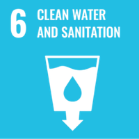
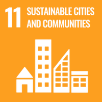

A cluster of educational institutions, two Pondicherry University alumni, and APSCC came together to answer one question: could Kanagan Lake — a stressed urban waterbody at Oulgaret Municipality — be brought back to life? The assessment mapped 22 site-specific threats and set out a Green Protocol to guide its revival.
A study rooted in the community
The Climate & Vulnerability Assessment of Kanagan Lake was carried out by Dr. Golda Edwin and Dr. Nandhivarman — both Pondicherry University alumni — in partnership with APSCC. The initiative traces back to a call for urban waterbody rejuvenation championed by then Lieutenant Governor Dr. Kiran Bedi, and was powered by the voluntary efforts of a cluster of educational institutions committed to environmental stewardship.
Rather than treating the lake as an isolated pond, the team examined it as a living urban ecosystem — one whose health is tied to the pressures of the city that surrounds it. Their diagnosis was clear: unchecked urbanization sits at the root of the lake's decline.
Twenty-two threats, one root cause
The assessment catalogued 22 distinct, site-specific threats to Kanagan Lake — from encroachment and solid-waste dumping to untreated inflows, siltation, and the steady erosion of native biodiversity. Each threat was documented against the specific stretch of the lake it affects, giving restoration planners an actionable, location-aware map rather than a generic wish list.
Across every threat, a single driver recurred: urbanization. As Puducherry's built footprint expanded, the lake absorbed the consequences — making its recovery inseparable from how the surrounding community chooses to grow.
The Green Protocol
The study's central recommendation is a Green Protocol for the lake and pond — a structured set of practices for restoration and ongoing care. It weaves together pond rejuvenation, biodiversity recovery, and community stewardship, and it explicitly connects local action to the Sustainable Development Goals. The report also surveys existing Government of India and Puducherry initiatives, positioning Kanagan Lake's revival within a wider policy landscape rather than as a standalone effort.
Reviving a lake is not a one-time clean-up — it is a protocol the community commits to, season after season.
From liability to landmark: the eco-tourism case
Beyond ecological repair, the assessment identifies clear eco-tourism unique selling points for a restored Kanagan Lake. A healthy waterbody at the heart of Oulgaret could become a green landmark — supporting recreation, environmental education, and local livelihoods while reinforcing the very biodiversity the restoration seeks to protect. In this vision, conservation and community benefit reinforce one another.
Aligned with the Global Goals
Pond rejuvenation at Kanagan Lake maps directly onto four Sustainable Development Goals — clean water and sanitation, sustainable cities, climate action, and life on land.

